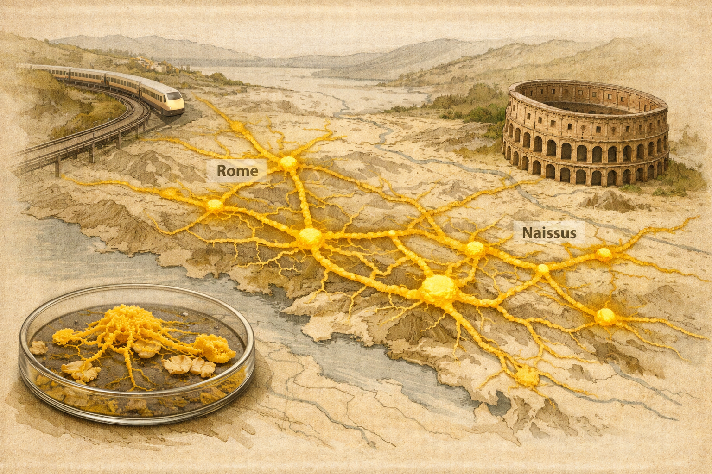

Stepwise Slime Mould Growth as a Template for Urban Design
A two-phase model inspired by Physarum separates network growth from network refinement, giving designers tunable control over cost, travel time, and fault vulnerability.

The slime mould Physarum polycephalum grows as a living transport network, extending tubes of protoplasm between food sources while gradually reinforcing efficient paths and eliminating redundant ones. This behavior has made it a useful biological model for network problems such as road, rail, and routing design.
Most digital Physarum models combine early foraging and later path reinforcement into one feedback-driven process. That captures biology well, but it can make the model harder to steer when designers need explicit control over competing infrastructure goals.
What they did
Kay, Mattacchione, Katrycz, and Hatton built a two-stage computational model of Physarum-inspired network formation. First, an agent-based simulation generated a site-responsive mesh from agents attracted to nutrient-like points. Then, a modified shortest-walk calculation refined that mesh into a final network.
They compared model-generated networks with real Physarum grown on oat layouts, then applied the method to urban-scale examples including Canada's Wonderland, the Toronto subway system, and population-density-defined attractor networks.
Key finding
The stepwise model reproduced the performance of biological Physarum networks to within 4% across cost, travel time, and vulnerability metrics. By adjusting a proximity coefficient during refinement, the model could tune network connectivity: higher connectivity increased total cost but reduced travel time and fault vulnerability.
Why it matters
The work turns slime mould growth into a controllable design workflow rather than only a biological simulation. Because the mesh-building and refinement stages are separated, designers can generate networks from attractor-based spatial data and then tune them for practical trade-offs such as efficiency, resilience, and infrastructure cost.
The approach also gives a quantitative way to benchmark existing urban networks. In the paper's examples, modelled networks sometimes differed from built infrastructure in revealing ways, highlighting how biological design rules can expose trade-offs that conventional planning may not make explicit.
The model deliberately omits the constructive feedback mechanism of real Physarum streaming, so it is less biologically faithful than some integrated models. It also currently works in idealized attractor-based environments and does not include repellants or anti-attractors, which are important in real urban landscapes.
Separating Physarum-like growth into biased meshing and network refinement creates a practical tool for tunable, bio-inspired network design.
"The main contribution is not simply copying slime mould, but making its network logic editable: first grow a responsive mesh, then tune the final transport system."
Stepwise slime mould growth as a template for urban design
Authors: Raphael Kay, Anthony Mattacchione, Charlie Katrycz, and Benjamin D. Hatton
Journal: Scientific Reports, Vol. 12, Article 1322, 2022